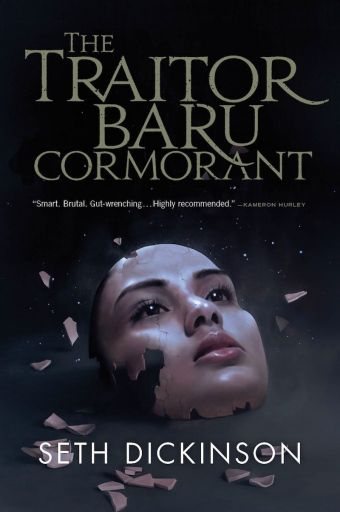
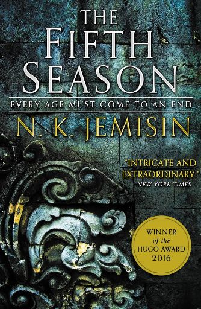
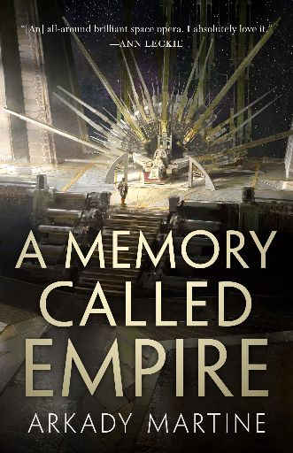
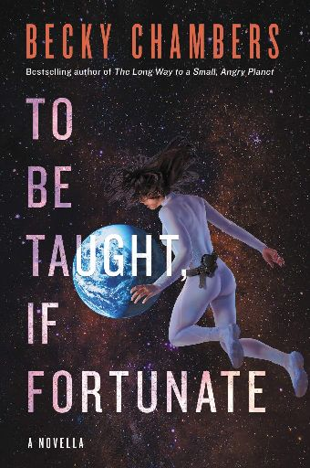

| Book Title | Cover | Author | Summary |
|---|---|---|---|
| The Traitor Baru Cormorant |  | Seth Dickinson | A hard fantasy novel following the life of Baru Cormorant, who grows up on the island Taranoke recently subjected to the influences of an imperial power of Falcrest via annexation. Baru grows up as a savant in the imperial education system, and seeks to gain political power as a foreigner after being placed as an accountant in a area of unrest. It's a great series that covers the way encratism creates self-policing to work with an overtaking economic power, cultural isolation, repression, and the nature of economics are used to create subsidiary colonies out of independent states. It can be very crushing to read through but is a highly complex yet cogent set of novels that challenges the protagonist and reader throughout. |
| The Fifth Season |  | N.K. Jemisin | This is the first of the 'Broken Earth' trilogy. It is set in a post-apocalyptic Earth, where certain people have essentially the ability to create earthquakes/energy - Orogenes. This power is what caused the apocalypse and the continued 'seasons' of desolation and starvation. This forces the Orogene to be aggressively hated by the surviving people, and the necessity to use the powers to stabilize areas yielded a training system. The first novel follows three characters in the world: Essun - whose husband murdered her child when he found out he was an Orogene and stole their daughter. Damaya - a child being sent to Fulcrum to train. Syenite - an adult from Fulcrum leaving to city with a higher member of the system. A very brutal novel with a well realized world building and characters. |
| A Memory Called Empire |  | Arkady Martine | Mahit Dzmare is the new ambassador to imperialist power Teixcalaan from Lsel Station. Lsel is a smaller satellite, but has the cultural practices to carry the memory of a lineage through a neurological implant. Mahit has the outdated memories of the previous Lsel ambassador as she investigates his murder that occurred shortly before arriving. It’s a fantastic book with a unique construction of a society based on narrative as its primary cultural value. Mahit struggles with being raised to value Teixcalaanli culture as a pinnicle of civilization while never being able to being a true part of it while navigating a complex political web of succession to the dying emperor of Teixcalann. |
| To Be Taught, If Fortunate |  | Becky Chambers | Becky Chambers is a fantastic speculative fiction author, and her Wayfarer series is extremely good as well. 'To be Taught, If Fortunate' follows a space exploration crew fulfilling a research mission with limited communication to back to earth. Great read for those familiar with everydays of scientific research. |